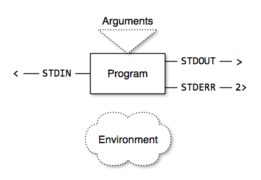

Think in Filters
Introduction to the Unix Command Line
Command Line Programs
- Arguments
- "Connectors"
- Environment Variables
Command Line Programs

Arguments
- Additional settings given after the program name
- In Bash, these become the variables
$1, $2, etc.
- Like knobs, dials, and switches for your program
Connectors
- Every program has 3 default connectors
- STDIN (0)
- STDOUT (1)
- STDERR (2)
Default Connectors
- Normally connected to your console:
- STDIN from keyboard
- STDOUT and STDERR to screen
- You can also connect them to files:
- STDIN:
command < input.txt
- STDOUT:
command > output.txt
- STDOUT (append):
command >> log.txt
- STDERR:
command 2> errors.txt
- STDERR (append):
command 2>> error_log.txt
- All at the same time:
command < input.txt > output.txt 2> errors.txt
Connecting Programs
- Pipes
- Connect one program's STDOUT to the next program's STDIN
ls | wc -l
Environment Variables
- Set:
VARIABLE=value
- Get:
$VARIABLE
- Can control the behavior of commands and programs
- Scripts can use them to find out about the environment they are running in
(e.g.,
$HOME, $PWD)
- Use them to store intermediate values in your scripts
The Unix Way
- Do one thing and do it well
- Break a complex task up into simpler pieces
(Almost) Everything is a Filter
- Build programs as filters
- Read STDIN
- Process
- Write to STDOUT
Development Strategies
- Build pipes on the command line
- Transfer them to a script once you have them working
- Look for existing tools
- Think of pipes when you hear "and"
More Complex Problems
- Use a scripting language to write the necessary piece
- Awk, Perl, Python, Ruby
- Parsing of more complicated data formats
- Sometimes quick-and-dirty is enough
- Sometimes you want a robust solution
- Write your program using a library for your scripting language of choice
- Consider making the program as simple as possible
- Use existing tools to handle common tasks
- List the contents of a directory:
ls
- Finding files or directories:
find
Processing
- Sorting:
sort
- Find unique occurances:
sort | uniq
- Filtering:
grep
- Splitting input into columns:
cut
- Search-and-replace:
sed
- Counting:
wc
- Pretty-print XML:
xmllint --format
- Beginning or end of input:
head, tail
- Convert a list to arguments:
xargs
Output
- Paging:
less
- Source code highlighting:
pygmentize
- Search:
apropos "search term"
- Help:
man command
- Google